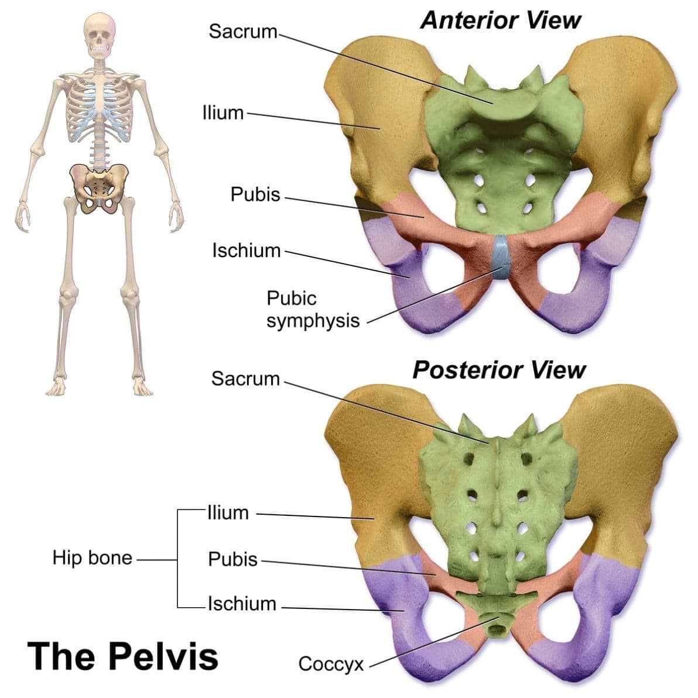
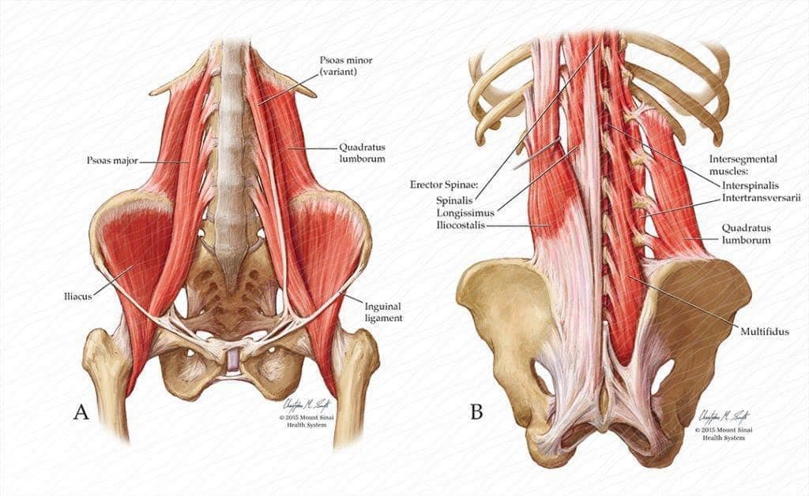

💡#骨盆 的自我回正能力有多重要？
💡#骨盆 的自我回正能力有多重要？
今日診間接連來了兩位需要調骨盆的個案：
一位是在2016年蹲姿起身一個不注意，碰撞到尾椎後痛了一周，後續8年間出現階段性尾椎刺痛、悶痛，時好時壞，期間嘗試過各種方治療仍無法完全治癒，最影響生活的症狀是坐著15-20分鐘後就會尾椎就會開始悶痛、刺痛；
另一位是剛生產完一週的年輕媽媽，自然產後會陰部傷口恢復良好，但坐在椅子上始終覺得盆底緊繃、說不上來的怪感，怎麼喬角度都不對勁。
前篇提過，調骨盆，是在調「骨盆的回整能力」，也就是骨盆「隨著日常活動而變化調節的活動能力」。
骨盆的活動能力，除了牽涉到相關肌群的張力不均等拉扯，也要考慮相關鄰近關節面的活動度，像是骨盆本身的腰薦關節(L5-S1)、兩側薦髂關節(SIJ)，還有往上到腰椎肋骨相連的腰肋三角區，腰方肌與腰大肌兩者前後的結抗、協同或代償都是需要列入考量的因素。
在真正調動骨盆之前，上述的相關肌群、關節活動等因素，都需要一一解決排除後，才能開始進入調骨盆的程序。
今日這兩位怕針的個案，透過全面性的檢查與徒手調整後，骨盆的回正功能總算恢復，再次請個案嘗試各自會引發疼痛的擺位姿勢或久坐在候診區，都確認不再引發疼痛後才離開診間。
骨盆作為身體中軸與力量傳遞的樞紐，對於日常生活中的基本活動，其重要性不言而喻！骨盆回正活動能力的失能，是造成常見慢性疼痛的主因，從骨盆活動失能的角度切入，往往都能獲得意想不到的效用。
🙋🏻♀️：醫師，那我下次何時還要再回診？
👨⚕️：回去就正常活動過生活，觀察看看，如果都回歸正常了，就畢業啦🎉🎉🎉
太初中醫診所
中醫師 黃彥鈞

